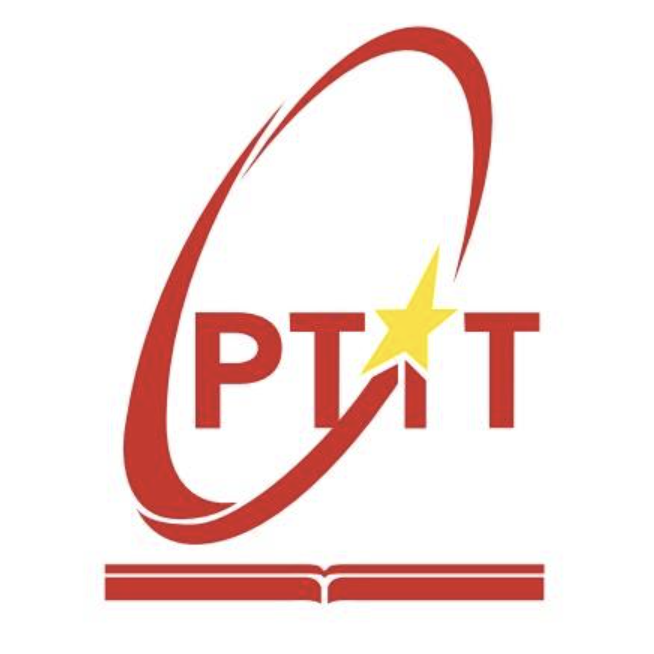
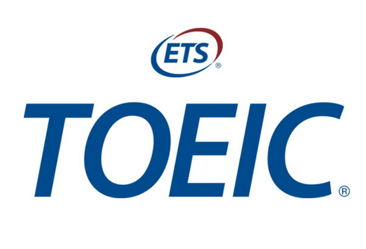
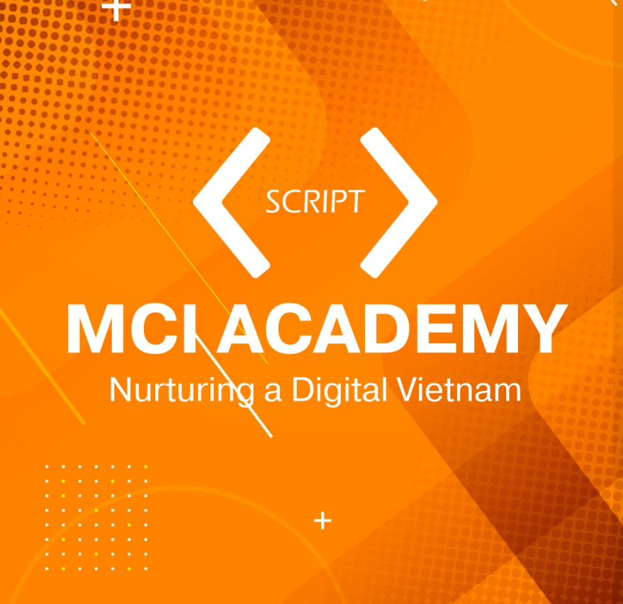

October 2022 - 2026
Posts and Telecommunications Institute of Technology (PTIT Hanoi)

+ Bachelor degree
+ Major: Business Administration
+ GPA: 3.2/4.0
+ Volunteer Activities (September 2023–July 2024): I actively participated in a range of volunteer activities with PTIT's Student Volunteer Club, showing compassion and dedication. These included, among other things, delivering late-night meals to the homeless, helping with blood drives, visiting hospitals to support children with autism and ADHD, raising money for kids in distant places, and providing assistance to orphans in temples.
PTIT Hanoi is the 3rd Ranked school in the field of Information Technology in Hanoi according to employers from Leading Technology Corporations (Samsung, LG, Viettel, VNPT, FPT,…)
The reputation of the digital technology training program at the Posts and Telecommunications Institute of Technology (PTIT) stems from its strong foundation and high-quality education in this field, especially in areas such as Information and Communication Technology (ICT), including Artificial Intelligence, semiconductor technology, cybersecurity, data science and engineering, and multimedia technology.
Ocbotber 2025 - March 2026
CFA Level 1

In the upcoming CFA Level 1 course, I will study fundamental concepts in finance, investment, and ethics. The curriculum covers ten key topics: Ethical and Professional Standards, Quantitative Methods, Economics, Financial Statement Analysis, Corporate Issuers, Equity Investments, Fixed Income, Derivatives, Alternative Investments, and Portfolio Management. Through this program, I will develop a strong foundation in financial analysis, risk management, and investment strategies, preparing me for more advanced levels in the CFA journey.
June 2024
Google Data Analytics Certificate

I successfully completed the Google Data Analytics Certificate, which provided me with a comprehensive understanding of data analysis principles and tools. The program covered key areas such as data cleaning, visualization, statistical analysis, and problem-solving techniques using tools like Excel, SQL, R, and Tableau. Through hands-on projects, I developed practical skills in data manipulation, analysis, and presenting data-driven insights, equipping me to handle real-world data challenges in a professional setting.

Completed the TOEIC exam with a score of 835, demonstrating proficiency in using English for international communication. This certificate reflects strong listening and reading comprehension skills, enabling effective communication in professional and multinational environments that require frequent use of English.
March 2024 - November 2024
MCI Consulting & Analytics

Completed and currently finalizing a comprehensive Python Data Analytics course, covering essential skills for data analysis and business intelligence. The course included hands-on training in Python programming, SQL for database management, Power BI for data visualization, and applied mathematics using Python. Gained experience in data manipulation, statistical analysis, and creating interactive dashboards to effectively communicate insights and support data-driven decision-making.
June 2024
Risk Management Job Simulation

In the "Risk Management Job Simulation" by Standard Bank on Forage, I participated in a real-world job simulation where I completed tasks related to evaluating and managing risks in various financial scenarios. The course helped me develop skills in identifying risks, analyzing, and planning risk mitigation strategies for financial transactions. I also learned to apply both quantitative and qualitative analytical tools to make strategic decisions in the global banking and finance environment.
June 2024
Financial Analyst Job Simulation

The "Financial Analyst Job Simulation" by New York Jobs CEO Council on Forage helped me develop practical financial analysis skills through a simulation of a financial analyst's job. I worked on tasks related to analyzing financial reports, forecasting budgets, and evaluating the financial performance of businesses. This course provided me with knowledge of financial methods and tools to optimize investment decisions and financial strategies, while also improving my ability to communicate and report financial information to stakeholders.